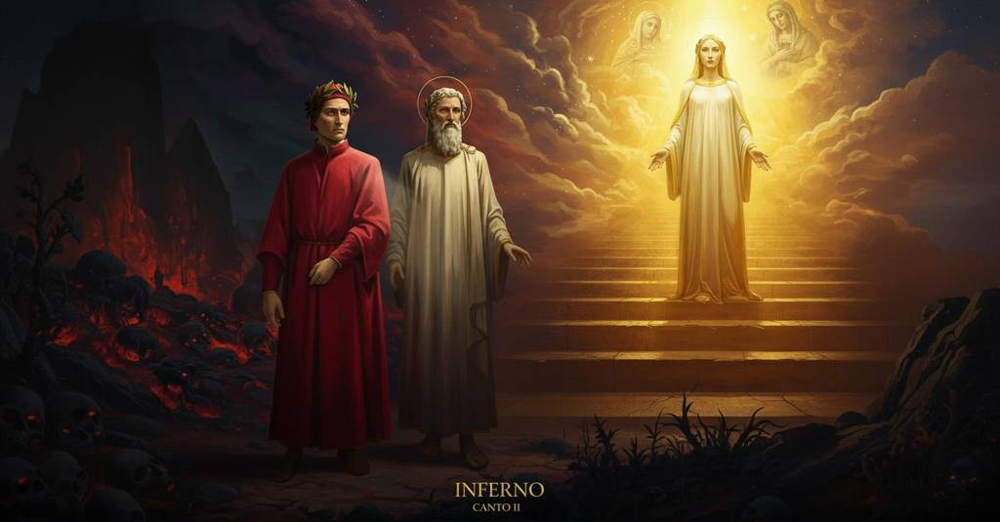

Inferno — Canto 2

Riassunto Summary 要約
Dante, preso dal dubbio sulla propria adeguatezza, viene rassicurato da Virgilio, il quale gli rivela di essere stato inviato da Beatrice, a sua volta mossa da Lucia e dalla Vergine, restituendogli così il coraggio per iniziare il viaggio.
Dante, seized by doubt about his own adequacy, is reassured by Virgil, who reveals he was sent by Beatrice—in turn moved by Lucia and the Virgin Mary—thus restoring his courage to begin the journey.
自身の適性を疑うダンテだったが、ウェルギリウスから、自分がベアトリーチェに遣わされ、その彼女もルチアと聖母マリアに促されたのだと明かされて安心し、旅を始める勇気を取り戻す。
Segmento 1 1–42
Al calar del giorno, mentre tutte le creature riposano, il narratore si prepara da solo ad affrontare il difficile viaggio e invoca le Muse e il proprio ingegno. Preso dal dubbio, si rivolge a Virgilio, mettendo in discussione la propria adeguatezza. Ricorda che Enea e San Paolo intrapresero viaggi nell'oltretomba, ma le loro missioni erano giustificate da scopi divini: la fondazione di Roma, futuro centro della Chiesa, e il rafforzamento della fede. Sentendosi indegno rispetto a loro ("Io non Enëa, io non Paulo sono"), teme che la sua impresa sia una follia. Travolto da questi nuovi pensieri, la sua determinazione iniziale vacilla e, come chi cambia idea, si ritrova a voler abbandonare il cammino appena intrapreso.
As day falls and all creatures are resting, the narrator alone prepares to face the difficult journey and invokes the Muses and his own intellect. Seized by doubt, he turns to Virgil, questioning his own adequacy. He recalls that Aeneas and Saint Paul undertook journeys to the underworld, but their missions were justified by divine purposes: the founding of Rome, future center of the Church, and the strengthening of faith. Feeling unworthy compared to them ("I am not Aeneas, I am not Paul"), he fears his undertaking is folly. Overwhelmed by these new thoughts, his initial resolve wavers and, like one who changes his mind, he finds himself wanting to abandon the path he has just undertaken.
日が暮れ、すべての生き物が休んでいる中、語り手はただ一人、困難な旅に立ち向かう準備をしながら、ムーサと自らの才知に助けを求める。疑念に駆られた彼はウェルギリウスに向き直り、自身にその資格があるのかと問いかける。彼は、アエネアスと聖パウロが冥界への旅を経験したことを思い出すが、彼らの使命は、教会の中心となるローマの建国や、信仰の強化といった神聖な目的によって正当化されていた。彼らと比べて自分はふさわしくないと感じ（「私はアエネアスでも、パウロでもない」）、自らの企てが狂気の沙汰ではないかと恐れる。新たな考えに圧倒され、彼の最初の決意は揺らぎ、まるで心変わりした者のように、引き受けたばかりの道行きを放棄したくなるのだった。
Segmento 2 43–126
Virgilio risponde che l'animo del narratore è afflitto dalla viltà e, per dissipare i suoi timori, gli rivela l'origine divina della sua missione. Racconta di come, mentre si trovava nel Limbo, fu raggiunto da una donna beata e bella, Beatrice. Mossa dall'amore, ella gli spiegò che un suo amico (il narratore) si era smarrito e gli chiese di soccorrerlo con la sua "parola ornata". Beatrice rivelò inoltre di essere stata a sua volta spronata da Lucia, inviata da una "donna gentil" del cielo (la Vergine Maria) che si era compianta dell'impedimento del narratore. Dopo aver spiegato che tre donne benedette vegliano su di lui dalla corte celeste, Virgilio rimprovera aspramente il narratore, chiedendogli perché persista nella paura e non mostri coraggio e franchezza.
Virgil replies that the narrator's soul is afflicted by cowardice and, to dispel his fears, reveals the divine origin of his mission. He recounts how, while he was in Limbo, he was approached by a blessed and beautiful lady, Beatrice. Moved by love, she explained that a friend of hers (the narrator) had gone astray and asked him to rescue him with his "ornate speech". Beatrice also revealed that she in turn had been spurred on by Lucia, who was sent by a "noble lady" in heaven (the Virgin Mary) who took pity on the narrator's predicament. After explaining that three blessed ladies are watching over him from the celestial court, Virgil sharply rebukes the narrator, asking him why he persists in fear and does not show courage and frankness.
ウェルギリウスは、語り手の魂は卑劣さに苛まれていると答え、その恐れを払拭するために、自らの使命が神聖な起源を持つことを明らかにする。彼は、自分がリンボにいた時、祝福された美しい貴婦人ベアトリーチェが訪ねてきた経緯を語る。愛に動かされた彼女は、自分の友人（語り手）が道に迷ったと説明し、その「巧みな言葉」で彼を救うようウェルギリウスに依頼した。ベアトリーチェはさらに、自分自身もまた、語り手の苦境を憐れんだ天の「気高い貴婦人」（聖母マリア）によって遣わされたルチアに促されたのだと明かした。天の宮廷から三人の祝福された貴婦人が見守っていると説明した後、ウェルギリウスは語り手を厳しく叱責し、なぜ恐れ続け、勇気と率直さを示さないのかと問いただす。
Segmento 3 127–142
Come i fiori chiusi dal gelo notturno si riaprono al sole, così il narratore, rinvigorito, ritrova il suo coraggio. Ringrazia Beatrice per la sua pietà e Virgilio per aver prontamente obbedito alle sue parole. Dichiara che il discorso di Virgilio lo ha riportato alla sua decisione iniziale e che ora i due condividono un'unica volontà. Proclamando Virgilio sua guida, suo signore e suo maestro, si incammina infine con lui per l'arduo cammino.
Like flowers closed by the night's frost that reopen in the sun, so the narrator, reinvigorated, recovers his courage. He thanks Beatrice for her pity and Virgil for having promptly obeyed her words. He declares that Virgil's speech has returned him to his initial decision and that now the two share a single will. Proclaiming Virgil his guide, his lord, and his master, he finally sets off with him on the arduous path.
夜の霜に閉ざされた花が太陽の光で再び開くように、活力を取り戻した語り手は勇気を取り戻す。彼はベアトリーチェの慈悲と、その言葉にすぐさま従ったウェルギリウスに感謝する。ウェルギリウスの話によって最初の決意に戻り、今や二人の意志は一つになったと宣言する。ウェルギリウスを自らの「導き手、主、師」と宣言し、ついに彼と共に険しい道へと足を踏み入れる。